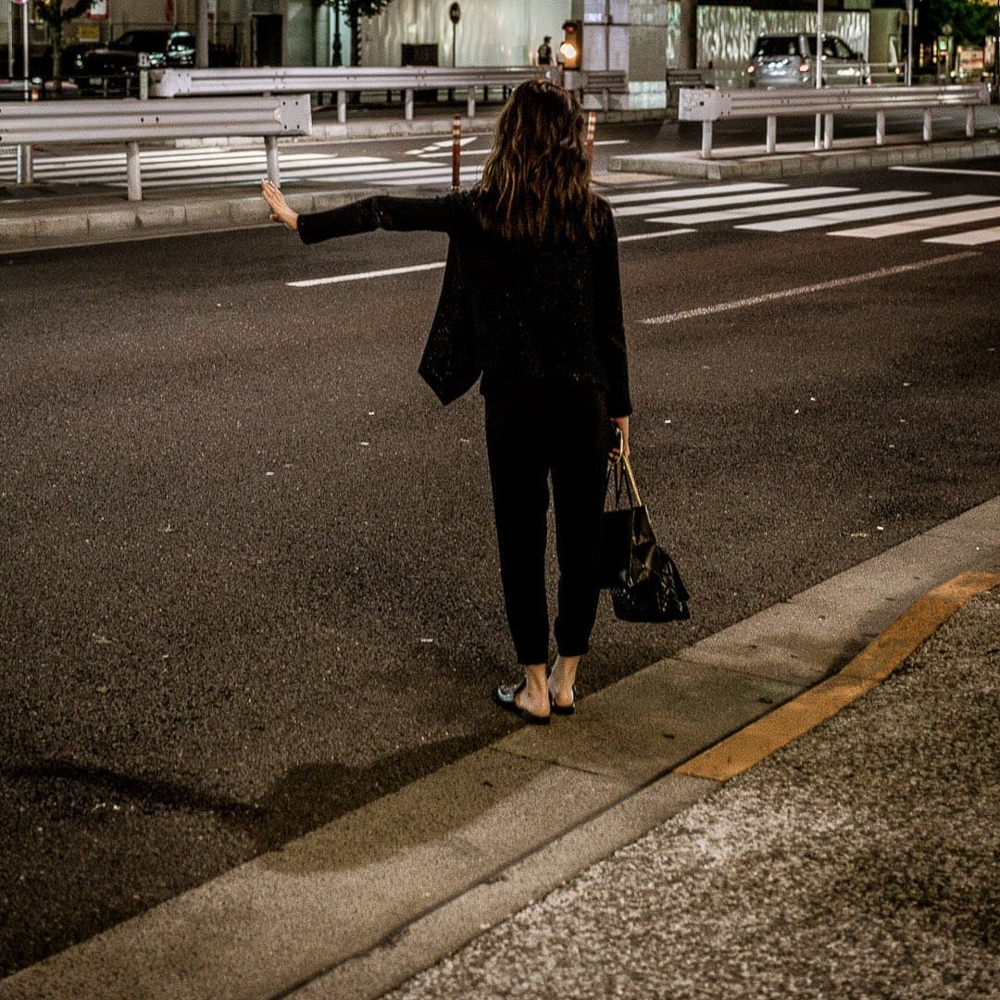
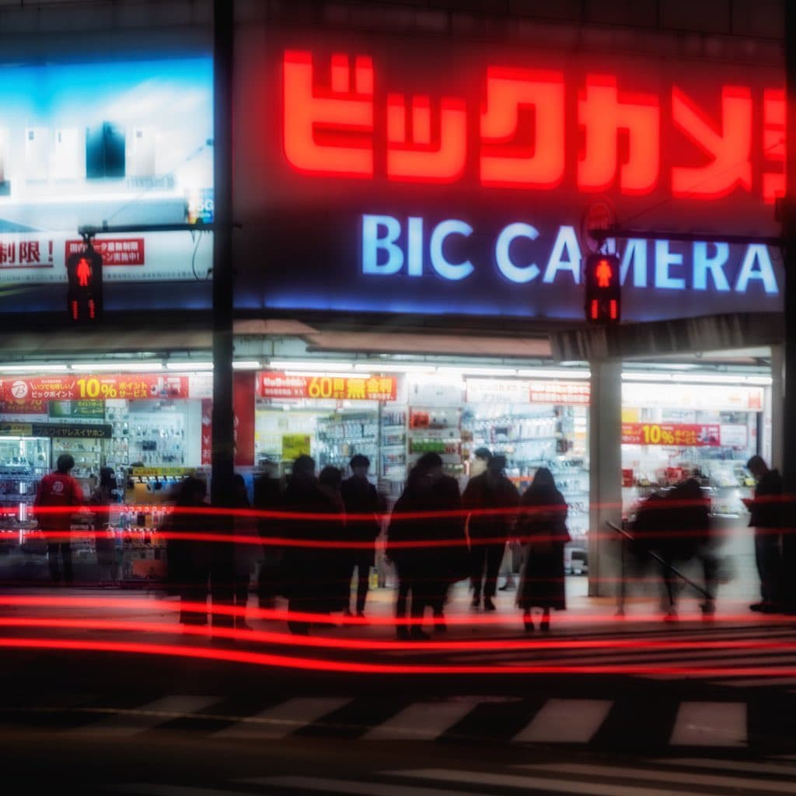
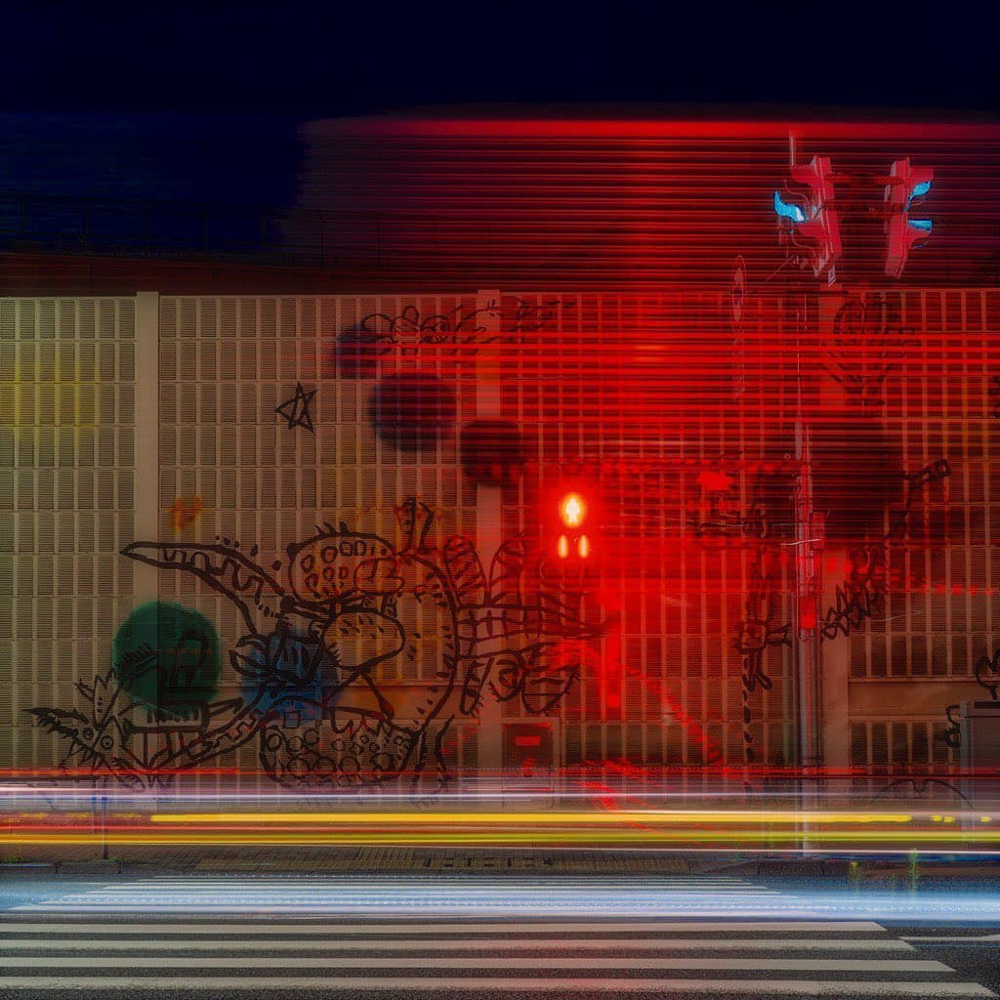

Ghost — 01
Threshold
入口 — 存在のズレ
Not a beginning.
Just something that remained.
Tokyo IP — Visual Proposal
We don't create content.
We create artifacts of a city that never existed.
入口 — 存在のズレ
Not a beginning.
Just something that remained.

人 — 匿名化された存在
No one stays.
Still, something passes.

反応 — 都市の化学
It wasn't light.
What it left behind.

減衰 — 都市の外縁
Nothing happens here.
That's why it stays.

残留 — 時間の堆積
The city forgot.
The image did not.

導入 — 現実からの切断
Not the city.
A structure pretending to be one.

反応のピーク
Too much light
to belong to anything real.

物質化 — 反応の結果
Something solidified
that was never meant to last.

過飽和 — 意味の崩壊
Nothing is missing.
That's the problem.
沈殿 — 反応後の静けさ
The city cooled.
What's left has no temperature.
For TRUNK HOTEL — A Proposal
TRUNK creates relationships between people.
We design relationships between people and space.
Together, this forms a continuous experience.
Spaces that hold memory. The invisible layer that accumulates through time. Guests do not merely pass through — they leave something behind.
Space as a living system. People as catalysts. The quality of a stay changes depending on who enters, how they move, when they arrive.
Entrance
Ghost
Transition from city to perception. The first shift.
Corridor
Ghost
Movement as a shifting experience. Residue of passage.
Lounge
Chemical
Social interaction layered with spatial response.
Night Identity
Chemical
Space that changes as perception shifts after dark.
Not decoration. The invisible layer of experience — designed for spaces that intend to be remembered.